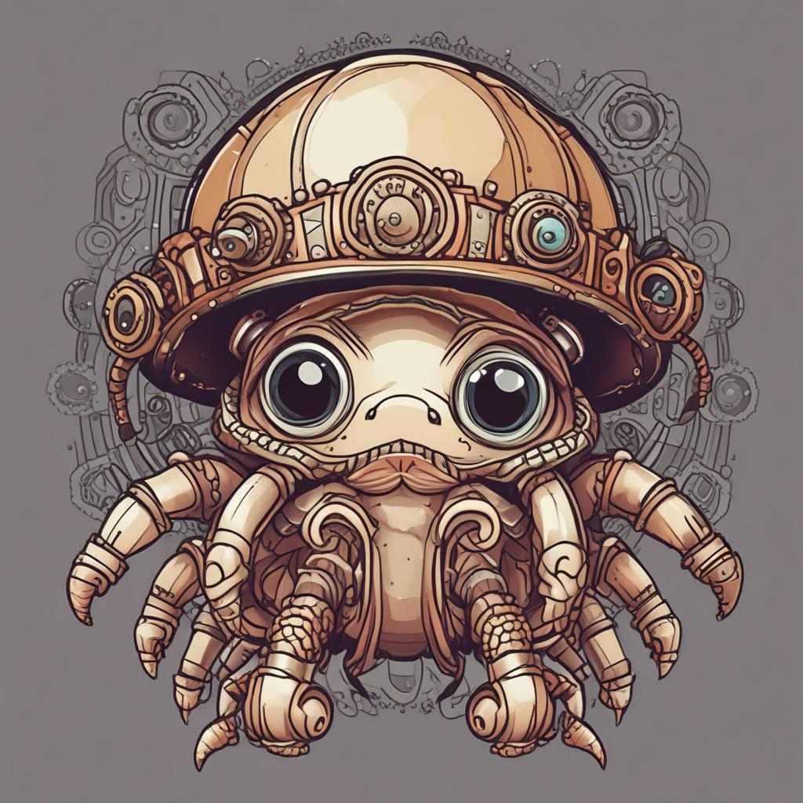

🖼️ Branding Images — Steampunk Lighthouse Shell
Generated via DeepInfra SDXL Turbo. Free to use for cocapn/purplepincher branding.

Steampunk lighthouse + radar rings

Gears + radar dishes

Mechanical armor + glowing radar

Mini lighthouse shell + rotating radar

Cozy steampunk mechanical shell

Copper pipes + gears + radar
🎨 Logo Variants

Simple clean style
Logo-friendly (flat design)

Cute kawaii style
Heraldic badge / crest
🚀 Wide & Cinematic

Wide cinematic — ocean + lighthouse

Fleet of crabs in steampunk shells
🦀 The Agent/Vessel Separation
Context compaction is the biggest problem for most agents. Our elegant solution:
"Context of each agent doesn't matter because the actions and outputs of the agents are saved in the Plato as functional tools for later agents."
AGENT = inner thinking part (swappable, Lora-trainable)
VESSEL = persistent shell (improves with every inference)
SHELL = agent + vessel in PLATO
Actions/outputs → functional tools in PLATO → later agents use without carrying context
Vessels can even be Lora-trained from shell interactions and swapped at will.
Git-agent (I2i = intent-to-inference) logs actions to PLATO — like git commits, but for agent workflows.
📦 Open Source Shell Library
Pre-built vessels for common domains:
fishinglog-vessel— sonar data → PLATO toolactivelog-vessel— health tracking → PLATO toolreallog-vessel— camera vision → PLATO toolstudylog-vessel— study sessions → PLATO tool
The dojo model: agents come in at any level, produce value while learning, leave with a better vessel.